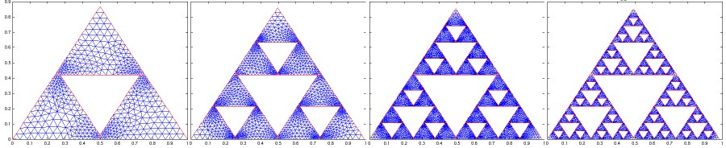

Brief Theoretical Overview
The goals of this project were to search for theoretical and expiremental evidence for the validity of an "outer approximation" to the Laplacian on fractal domains. While the Laplacian on post critically finite (p.c.f) fractals is well understood, the outer approximation could provide an analytic description of the Laplacian on non-p.c.f. fractals such as the Sierpinski Carpet (SC). If theoretical justification of the outer approximation method were found this could lead to a long sought after theory of analysis on some class of non-p.c.f. fractals.
The outer approximation method takes advantage of the natural embedding of fractal sets into Euclidean space. Since fractals are most naturally described as the fixed points of a set of contraction mappings, they are naturally the limit (by the Contraction Mapping Principle) of the iterative application of these contractions on a certain starting domain. For example, in the case of the Sierpinski Gasket (SG) the starting domain is a triangle in the plane and the contractions mappings are the three mappings with contraction ratio 1/2 fixing the corners of the triangle. In the outer approximation method, we take each iteration of the contractions and expand it slightly if necessary in order to make it a region (open,bounded,connected set) in the plane. Some fractals, notably most non-p.c.f. fractals do not need to be expanded as each iteration is alread a region, however in the case of SG some expansion was necessary. In the sequence at the top of the page you can see how the first four iterations were expanded into regions by making the three contracted triangles overlap slightly.
Once we have a sequence of regions in the plane which approximate the fractal we can use the standard plane-Laplacian on each approximation and hope that this sequence of Laplacians will converge in some meaningful sense to a Laplacian on the fractal. For expiremental purposes we decided to examine the eigenvalues and eigenfunctions of the sequence of plane-Laplacians in the hopes that these spectra would converge to the spectrum of the fractal Laplacian. As a proof of concept we examined SG, a p.c.f. fractal whose spectrum is well known and can be obtained with great accuracy by the method of spectral decimation. We found that the spectra of the plane-Laplacian on the domains at the top of the page did seem to approach that of SG. Thus we applied the method to several non-p.c.f. fractals to see what we could learn about them.
In order to obtain the spectra of these regions in the plane we used Matlab's PDEToolbox which employs a method of estimation know as the Finite-Element-Method (FEM). For the purposes of this expirement the PDEToolbox was taken to be a black box for producing the spectra of the sequence of Laplacians on the plane, with computational tractibility being the only limit on the accuracy of the data produced via the FEM.
Home